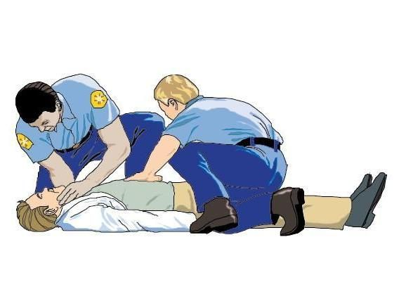
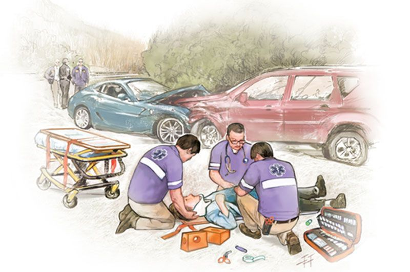
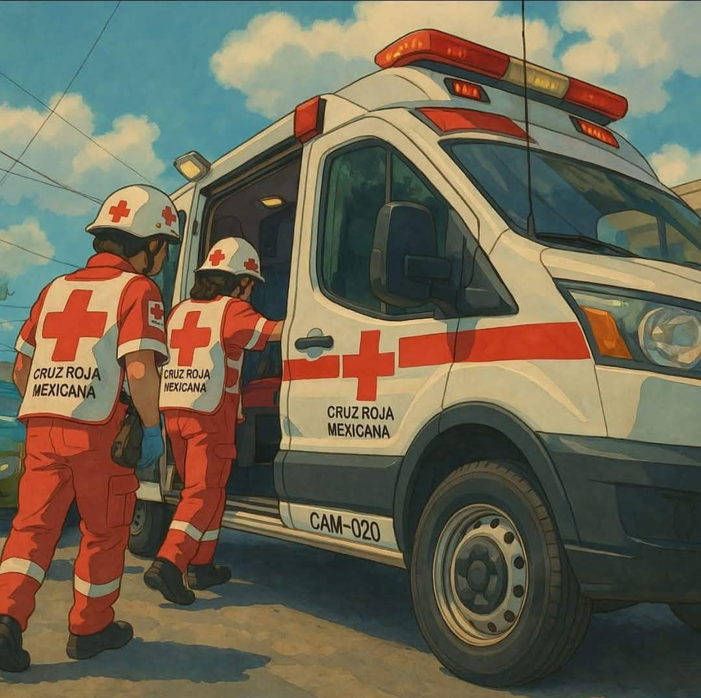
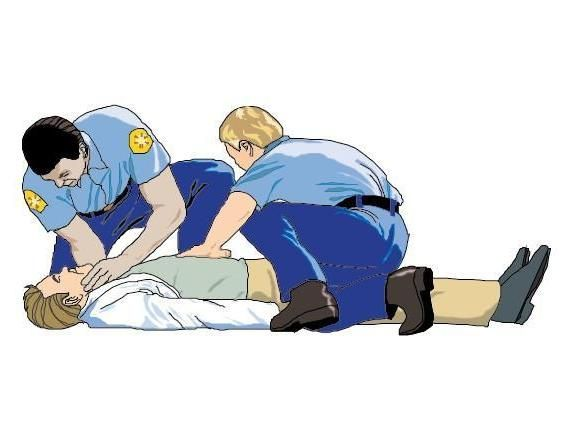
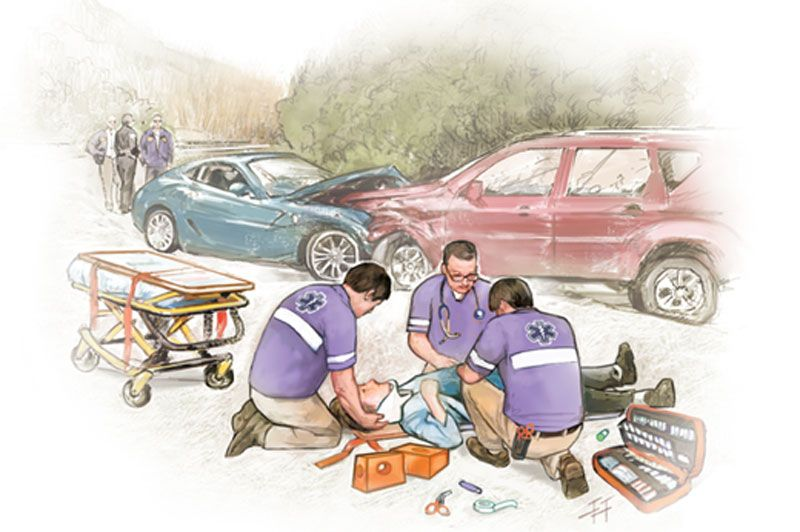
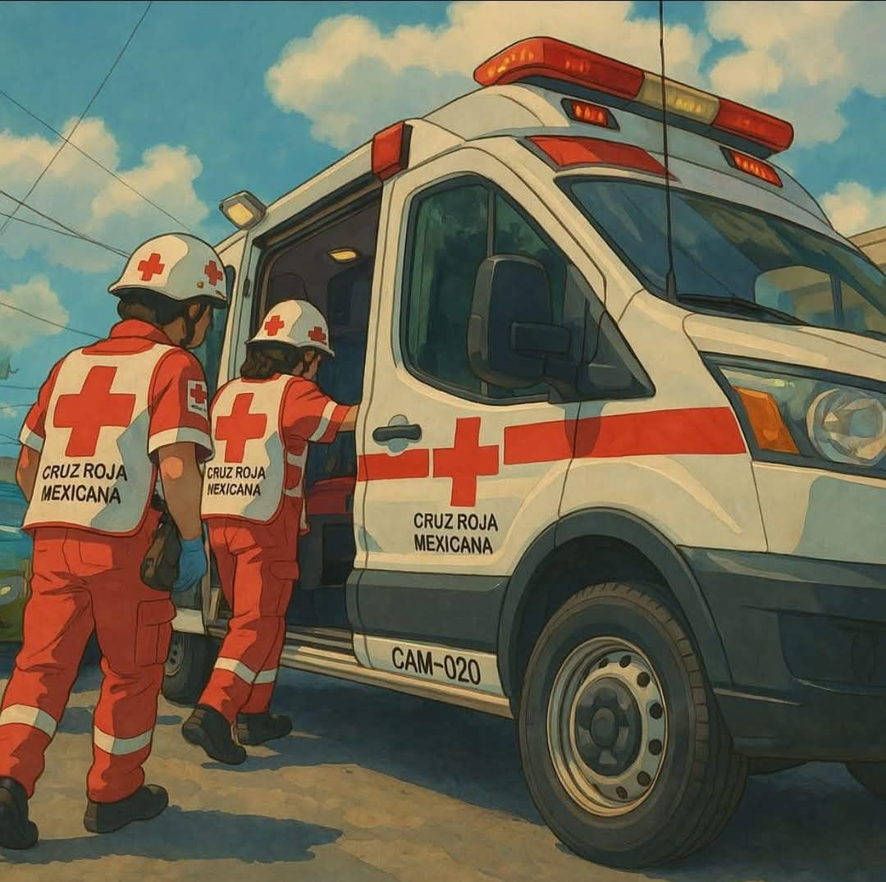

Introducción
La atención prehospitalaria se refiere a la atención médica brindada antes de llegar a un hospital, con el objetivo de estabilizar, atender y trasladar al paciente de manera segura durante una emergencia. Su finalidad es aumentar la supervivencia y disminuir las secuelas a largo plazo.
SOBRE NOSOTROS
Objetivos
- Prevenir complicaciones.
- Garantizar la seguridad del paciente.
- Brindar atención rápida y eficiente.
- Estabilizar al paciente previo a su llegada al hospital.
Misión
Proporcionar atención médica oportuna y de alta calidad en el lugar de la emergencia, estabilizando y transportando a los pacientes de manera segura hacia los centros de atención médica.
Visión
- Ser líderes en atención médica prehospitalaria mediante servicios de alta calidad basados en evidencia, que superen las expectativas de los pacientes y la comunidad.
Justificación
- Dirigida a personal de salud como enfermeros, médicos y paramédicos. La atención prehospitalaria es vital para salvar vidas y reducir complicaciones a largo plazo.
Política de Calidad
- Comprometidos con brindar un servicio humano, eficiente y orientado a la mejora continua, preservando la vida y el bienestar del paciente.
Propósito
- Mejorar la capacidad de respuesta ciudadana y asegurar la estabilidad del paciente desde el primer contacto hasta su llegada al hospital.
FODA
Fortalezas
- Aprendizaje rápido.
- Instructores certificados.
- Buenas instalaciones.
Oportunidades
- Certificación profesional.
- Capacitación continua.
- Especialización.
Debilidades
- Falta de experiencia previa.
- Poca iniciativa.
- Falta de disciplina.
Amenazas
- No contar con transporte.
- Falta de insumos.
- Competencia.
- Tiempo insuficiente.
- Falta de material.
💰 Presupuesto
🩹 Vendas: $15 – $30
🧤 Guantes: $50
🧥 Bata: (precio no especificado)
🩺 Equipamiento médico
🚑 Vehículos de emergencia
Conclusión
Este curso te ha permitido aprender habilidades esenciales para salvar vidas. Gracias a la teoría y la práctica, ahora cuentas con la capacidad de actuar con seguridad y confianza en situaciones críticas.
.png)


 




